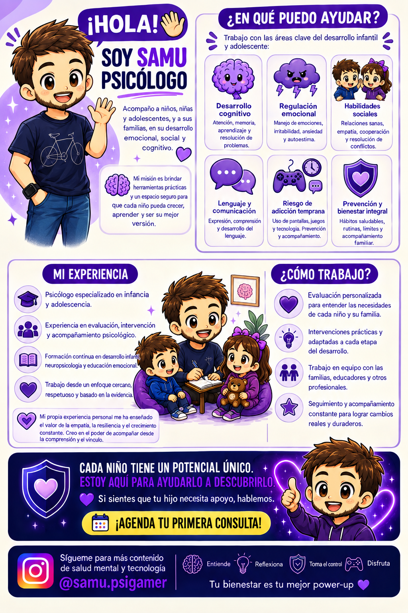

Infancia
Acompañamiento en las primeras etapas del desarrollo.
Psicología cercana para niños, adolescentes y familias. Entender las emociones, el desarrollo y también el mundo de las pantallas y los videojuegos.

La tecnología forma parte de la vida cotidiana. Por eso también puede formar parte de una conversación psicológica útil y sin prejuicios.
Mi objetivo es crear un espacio en el que niños, adolescentes y familias puedan entender qué está pasando, adquirir herramientas y avanzar paso a paso.
Me interesa especialmente la intersección entre salud mental, desarrollo, videojuegos y tecnología: hábitos digitales, regulación emocional, diseño de recompensas, uso de pantallas y prevención.
“No se trata de demonizar la tecnología.
Se trata de aprender a relacionarnos con ella.
Acompañamiento en las primeras etapas del desarrollo.
Orientación y apoyo en una etapa de grandes cambios.
Herramientas para comprender, acompañar y conectar mejor.
Evaluación y tratamiento desde un enfoque basado en la evidencia.
Comprender el impacto psicológico del entorno digital y los videojuegos.
Contenido claro, riguroso y accesible para todos.
Un espacio adaptado a la persona, su etapa de desarrollo y su contexto.
Apoyo psicológico para dificultades emocionales, sociales, conductuales y relacionadas con el desarrollo.
Quiero informarme →Orientación para mejorar la comunicación, establecer límites y acompañar los cambios sin entrar en luchas constantes.
Hablar sobre mi caso →Trabajo sobre hábitos digitales, uso problemático, recompensas, videojuegos y la relación entre tecnología y bienestar.
Ver enfoque gaming →En la infancia temprana, el contexto importa: sueño, juego, interacción, movimiento, lenguaje y acompañamiento adulto forman parte del mismo sistema.
No se trata de demonizar las pantallas, sino de entender qué experiencias pueden estar desplazando.
Loot boxes, pases de batalla, eventos temporales y micropagos pueden combinar recompensas, incertidumbre y urgencia. Conocer estos mecanismos ayuda a hablar de ellos sin demonizar el gaming.
Contenido claro para entender mejor el desarrollo y la relación con la tecnología.
Desarrollo, lenguaje, regulación emocional y la importancia de las experiencias compartidas.
Leer más → 🎮GAMINGQué hay detrás de las recompensas variables y por qué importa conocer su diseño.
Ver contenido → 💜FAMILIASCómo construir límites, alternativas y hábitos digitales que puedan mantenerse.
Hablar conmigo →Pedir ayuda no debería sentirse como entrar en un laberinto.
Situación, contexto y objetivos.
Prioridades y objetivos realistas.
Herramientas prácticas y adaptadas.
Seguimiento y ajustes.
Si quieres saber si puedo ayudarte, escríbeme y cuéntame brevemente qué está ocurriendo.